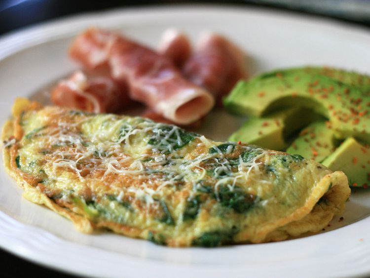

Baby Spinach Omelet

Description
Enjoy this spinach omelet with tender baby greens, Parmesan cheese, and a little nutmeg cooked together for the perfect start to the day.
Ingredients
- 2 eggs
- Butter
- 1 cup torn baby spinach leaves
- 1 1/2 tablespoons grated parmesan cheese
- 1/4 teaspoon onion powder
- 1/8 teaspoon ground nutmeg
- salt and pepper to taste
Steps
- Beat eggs in a bowl, and sir in baby spinach and parmesan cheese.
- Season with onion powder, nutmeg, salt, and pepper.
- Melt butter in a smallet skillet over medium heat.
- Add egg mix and cook until partially set.
- Flip with a spatula and continue cooking until eggs done to preferred egginess.
- Serve and enjoy.
Main Page